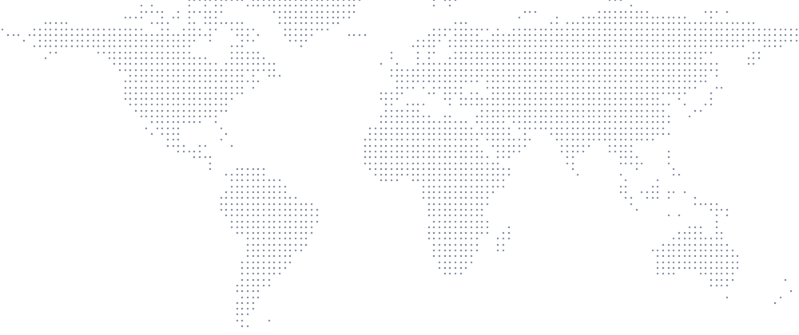

Sample Group/All plants/Operate/Global operations
Global operations
SAMPLE DATACompare plantsWeekly exec reportPlants connected
12
7 Asia-Oceania · 3 Americas · 2 Europe Estimate
Regional mix: 12 plants × OICA 2024 regional production share (OICA 2024 production).
Operator seats Estimate
720
12 plants × 60 seats per plant (assumption from the vision model).
Inspections, last 24h Estimate
5,760
720 seats × 8 inspections per seat per day (assumption).
Open escalations sample
231 plant escalated
Hand-written sample values, not an estimate.
Global footprint 12 sample plants

HealthyWatchEscalatedPlant locations and statuses are sample data.
Plants by region Estimate
| Region | OICA share | × 12 | Plants |
|---|---|---|---|
| Asia-Oceania | 59.4% | 7.1 | 7 |
| Americas | 20.7% | 2.5 | 3 |
| Europe | 18.6% | 2.2 | 2 |
| Africa | 1.3% | 0.2 | 0 |
Derived from OICA 2024 production (92.5M vehicles) × 12 sample plants, rounded. China alone is 33.8% → 4 plants.
Live alerts sample
!
Plant F · Pune: torque escalation unacknowledged
Level 2 · 22 min · Quality Manager notified
!
Plant H · Michigan: 2 missed layered audits
Line 2 · area manager assigned
!
Plant C · Chongqing: ERP sync queued
Connector retrying · no data lost
Plants sample
| Plant | Location | Open alerts | Status |
|---|---|---|---|
| Sample Plant A | Shanghai, CN | 1 | Healthy |
| Sample Plant B | Changchun, CN | 0 | Healthy |
| Sample Plant C | Chongqing, CN | 3 | Watch |
| Sample Plant D | Guangzhou, CN | 1 | Healthy |
| Sample Plant E | Nagoya, JP | 0 | Healthy |
| Sample Plant F | Pune, IN | 6 | Escalated |
| Sample Plant G | Ulsan, KR | 2 | Healthy |
| Sample Plant H | Michigan, US | 4 | Watch |
| Sample Plant J | Monterrey, MX | 1 | Healthy |
| Sample Plant K | São Paulo, BR | 2 | Healthy |
| Sample Plant L | Stuttgart, DE | 1 | Healthy |
| Sample Plant M | Valencia, ES | 2 | Healthy |
Feature names from DataMyte's public pages: Digital Clipboard Features · Escalate. Layout, data and anything marked “Imagined UI” are a concept by chrismai.ai. Figures marked “Estimate” are model-inferred; figures marked “Real dataset” come from cited public data. See Methods · Photo and data credits.